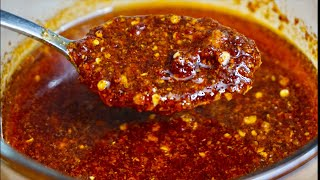

Back to home
Salsa Macha

Salsa macha is a Mexican spicy condiment typically made of oil, dried chilies, garlic and salt.
The chilies may be chile de árbol, serrano, chipotle, pequin or morita. Its origin is possibly Veracruz.
How to prepare
Ingredients
- Oil
- Chile de Arbol
- Garlic
- Peanuts
- Apple cider vinegar
Steps to prepare
- Heat oil in a pan
- Place chiles in the pan for a short period of time
- Pour chiles and oil into a blender
- Heat more oil in the same pan
- Place garlic in the oil, and cook until golden brown
- Pour garlic in oil into a blender
- In the same pan, use residual oil to lightly toast the peanuts
- Once toasted place peanuts in the blender
- Pour in apple cider vinegar and salt to taste
- Blend until no large pieces remain
- Allow to cool and enjoy!